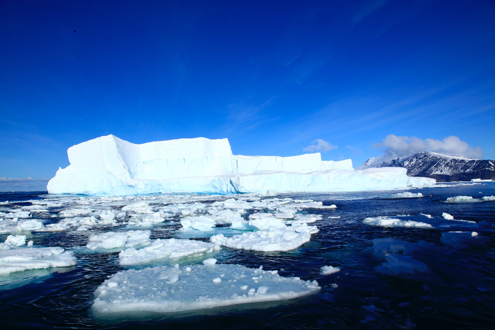
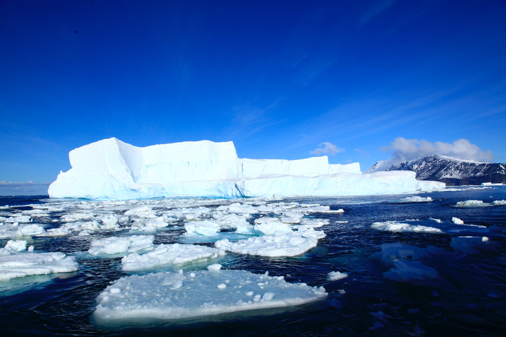

ผลกระทบ
 

ผลกระทบของภาวะโลกร้อน ผลกระทบของภาวะโลกร้อนมีความสำคัญและรวมถึงระดับน้ำทะเลที่สูงขึ้น เหตุการณ์สภาพอากาศที่รุนแรงและบ่อยขึ้น ธารน้ำแข็งละลายและแผ่นน้ำแข็งขั้วโลก การสูญเสียความหลากหลายทางชีวภาพ และกรดในมหาสมุทร การเปลี่ยนแปลงเหล่านี้ส่งผลกระทบในวงกว้างต่อระบบนิเวศ ความมั่นคงทางอาหาร และการตั้งถิ่นฐานของมนุษย์ ซึ่งนำไปสู่ความสูญเสียทางเศรษฐกิจ การหยุดชะงักทางสังคม และความเสี่ยงต่อสุขภาพ.